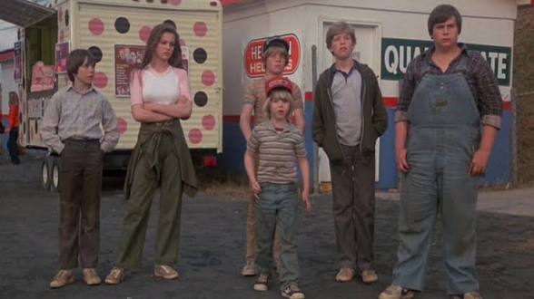

Six Pack (1982) — CERTIFIED MGC VF-25

🏎️ MGC LOWER COURT OF INQUEST
- ASSET TITLE: Six Pack (1982) – The Brewster Baker Country-Fried Planchet
- OFFICIAL REGISTRY GRADE: Certified MGC VF-25 (Very Fine / Average Entertainment Luster)
- LOWER COURT JURISDICTION: Judge Tina, Chief of Cult Classics
- CASE FILE: #050
📜 THE FORENSIC NARRATIVE BREAKDOWN & RECOVERY
Tina evaluates the 1982 cult classic Six Pack, starring Kenny Rogers as racecar driver Brewster Baker, who finds himself accidentally acting as a guardian to a band of orphaned kids acting as his pit crew.
🚨 KEY PLANCHET FEATURES:
1. High-Velocity Charisma Luster & Pit-Crew Strike Depth
- The film benefits from Rogers’ steady, uncirculated charm, energetic dirt-track racing scenes, and a soundtrack featuring ‘Love Will Turn You Around’. The dynamic between the reluctant driver and the street-smart orphan pit crew gives the 1980s asset a fun, engaging energy that elevates it above a standard exploitation flick.
2. Circulated Tropes & The Crooked Sheriff Bottleneck
- Despite its charm, standard genre tropes—such as a predictable plot involving a crooked local sheriff and conventional family-melodrama beats—slow down the second act. These common narrative scuffs keep the film anchored firmly in the mid-tier Very Fine range.
⚖️ THE CHIEF’S FINAL DECREE
- Tina swings her 12-inch rusted crescent wrench and smashes it flat against the cold steel bench with a deafening, echoing metallic CLANG! 🔧💥
“Let the ledger reflect the unvarnished hard truth: it’s not a pristine mint-state racer, but Kenny Rogers’ pure star power keeps this engine purring beautifully on the common shelf!”
- 🏎️ Case Closed. Certified MGC VF-25 (Very Fine Choice).

• © 2026 MOVIE GRADING CONSENSUS. All Sovereign Rights Reserved.